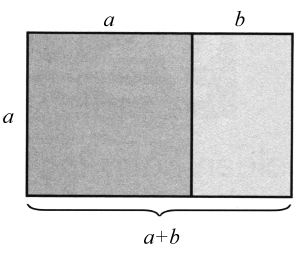

95 艺术与建筑中的黄金比例
数学概念：黄金比例
达·芬奇的《最后的晚餐》和米开朗基罗的《创世记》有什么共同点呢？这两幅画当中都包含黄金比例，一个在自然和人类社会中随处可见的比例。
数学课上讲过，比例是比较两个数字或尺度的一种方法。举个例子，假设你有一辆四门轿车，它有四个座和四个车轮，所以，车门和车轮的比例就是4∶4（然后可以把这个比例简化成1∶1）。或者，假设你喜欢宠物，养了2条狗和5只猫，那么，你家里狗和猫的比例就是2∶5。
黄金比例与1∶1和2∶5这两个比例一样，除了一点———黄金比例是1∶1．618（第二个数字其实是无穷无尽的，而且永不重复，这里为了方便才取这个近似值。如果在小数点后多加几位数，它将是1．61803398874989…）。

所谓的黄金矩形中也蕴含着黄金比例，因为黄金矩形的宽与长之比是1∶1．618（无穷无尽）。另外，如果在这个矩形内部画一个正方形，剩余矩形的宽与长之比也是1∶1．618，和大矩形的比例完全相等！换句话说，小矩形的宽与长之比（b∶a）等于大矩形的宽与长之比（a∶a＋b）。
几百年来，建筑师和艺术家都曾在他们的设计中运用黄金比例，似乎人类尤其青睐这个比例。下面是几个例子：
●假想雅典巴特农神庙正面是一个矩形，它的宽与长之比就是黄金比例。
●世界七大奇迹之一的吉萨金字塔也蕴藏着黄金比例，大金字塔的一条斜边长与底座边长的一半之比是1∶1．61804。
●分析一下列奥纳多·达·芬奇的《最后的晚餐》和西斯廷教堂穹顶上的壁画———米开朗基罗的《创世记》，你会发现，两幅画的创作靠的都是黄金比例。
黄金比例：事实还是虚构？
很多人相信，几千年来，人们一直在艺术和建筑中应用黄金比例。然而，有些数学家提出，没有证据可以证明这一点，而吉萨金字塔、万神庙甚至列奥纳多·达·芬奇画里的黄金比例都只是传说。